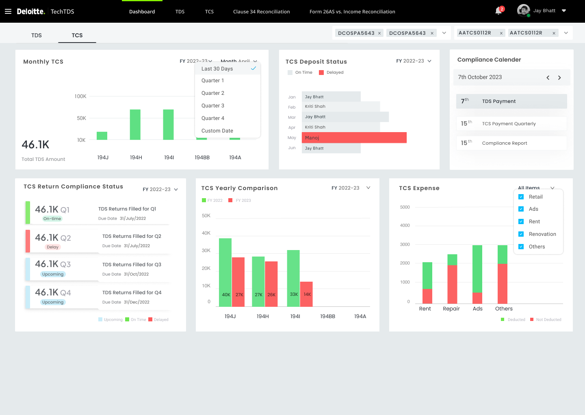

A cloud TDS/TCS compliance tool that folds six manual finance processes into one — and the rejected V1 that taught me how.
When we walked the client through V1, they only needed one screen to start counting off what we’d gotten wrong — dark mode, the wrong navigation, input files we hadn’t included, a single challan type where they used four, no approval step, a whole module missing. They knew the 100-page compliance spec by heart. We’d skimmed it. The gaps took them seconds to find.
The product is a cloud TDS/TCS compliance tool for corporate finance teams — it pulls six separate manual processes into one place. I was the only designer on it, responsible for the whole experience.
Here’s how the second version got approved.
Role
UX/UI Designer · Solo
Client
Big Four consulting firm
Domain
Enterprise tax compliance
Platform
Cloud SaaS
2024
Every large Indian corporate has to deduct TDS from its vendor payments, deposit it with the government, file quarterly returns, hand out certificates, and reconcile the whole thing at year-end. Every step is required by law, and every slip invites a notice or a penalty. Until this product existed, finance teams did all of it by hand — spreadsheets on one side, government portals on the other, and nothing connecting the two.
“Every month we pull data from several different input files, cross-check it by hand, retype it into the government portal — and still find errors at the year-end audit.”
Many input files, one government portal, ten thousand rows of guesswork. Six months later: a notice.
Several different input files, each maintained by a different person in a different place, with no single source of truth.
Every transaction cross-checked by hand. One wrong PAN, one missed LDC certificate — the deduction was wrong before calculation even started.
Calculated in Excel, retyped into TIN-NSDL. The same number entered twice — errors introduced at the boundary between the tool and the government.
Expense ledger vs TDS return vs Form 26AS — matched manually in Excel, row by row. Mismatches surfaced six months later, at the annual audit.
Before I drew anything, I had to understand the whole system — not just the screen in front of me.
So before any UI, I mapped the whole product — every module, every input file, every output it had to produce. The sitemap and the user journey became a kind of contract between me and the dev team: here’s what we’re building, and here’s how the pieces fit.
Both modules rolled up into one CFO view — that’s the platform promise.
Every step has an owner. Every owner has a signature. That’s what makes it a platform, not a tool.
With the map done, I had enough to start drawing screens. What I didn’t have yet was the right idea of what the product actually was.
The framing didn’t come out of nowhere. My company had shipped a tax tool before I joined — a thing whose only job was to be fast. The CEO and the engineers who’d built it briefed me on this new project, and I picked up their read of the problem without really questioning it. So when the client talked, I heard “calculate tax” and built exactly that: files in, answer out. What they actually needed was closer to an assembly line — six teams, each handling one stage, someone signing off at every handoff. As a calculator, V1 was fine. As the system they needed, it was useless.
In the review, the client opened V1, stopped on the first screen, and started counting off what was wrong. Three of those problems mattered more than the rest. I’ve marked them on the screen below.
I took the risk — dark interfaces were having a moment and I wanted to push the UI. I also misjudged what the tool was: I assumed it processed files in the background and surfaced a result. But compliance isn’t a background job — people live inside these screens for hours, reading dense tables and cross-checking numbers. Dark mode was exactly wrong for that. First thing they said in the room.
The tool accepted files and produced a result — a clean pipeline. But compliance isn’t a pipeline; it’s full of decision points. Which challan type applies to this entity? Is this a return or a revised return? Does an LDC exemption apply? I’d designed around all of it. A tool that skips decisions isn’t automating the work — it’s hiding it.
The platform calculates TDS, generates challans and initiates government payments. In every finance team that takes two people — one prepares, one approves. V1 had a single “Make Payment” button with nothing between the calculation and the bank. No review step. No CFO gate. One click and money moves on a potentially wrong number.
V1 ran on assumptions I’d inherited. V2 ran on the spec. That 100-page compliance document turned out to be the real user research — there were no interviews to lean on, just the law itself. Once I started reading it as the brief instead of background, almost every clause turned into a screen. That’s what got V2 approved.
Same compliance cycle as before, rebuilt. It’s light instead of dark, all the input files are in, there’s an approval gate at every step, and errors turn up while you’re working rather than at the year-end audit, when they’re expensive to fix. Here’s the V2 process, Part A through F, in the order a tax manager actually moves through it.
Each chart carries a number and a one-line question — who it’s for and what it answers. The chart type just follows from the question.
What I deliberately left off: vendor-level drill-downs, raw transaction tables, and the entire TCS module. All of it is one click away — none of it on the landing screen. The CFO’s first question is “are we covered, and where’s the risk?” — not “show me 10,000 rows.” Restraint is the design.

Built. Approved. Shipped. Just not pictured.
I’m not going to invent numbers. I’ve moved on from the project since, and it’s under NDA anyway, so I don’t have live usage data to wave around. What I can do is tell you what V2 does that V1 couldn’t — and how you’d check, just by talking to people, whether it’s actually working.
If those three answers are “less than before,” “yes,” and “yes” — the platform is doing its job.
One last thing — what I’d do differently if I had to start over.
The experience I brought from a similar project made me confident fast — maybe too fast. It also planted assumptions I never stopped to check. It was the same domain, but a genuinely different problem, and I didn’t see that early enough.
There were no users to interview here. The closest thing to them was that 100-page compliance document. When I treated it as background reading, we got V1. Reading it as the actual brief is what produced V2.
Honestly, getting rejected was the best thing that happened to the project. If they’d accepted V1, we’d have built everything on a foundation that was quietly wrong. Being sent back to the start forced the rethink that made the product actually work.
Next case study
Sphara